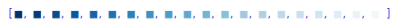
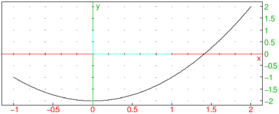

18.2.2 3D graph
Functions of two variables
The plotfunc
can draw the graphs of two-variable function.
-
plotfunc takes two mandatory argument and two
optional arguments:
-
expr, an expression defining a function of two
variables or a list of such expressions.
- vars, a list of the variable names,
possibly with bounds. If the variable is given as
var=a..b, the graph will be drawn for that range of that
variable, otherwise it will be graphed over the default interval
(see Section 2.5.8).
- Optionally, xstep, which can be
xstep=n to specify the discretization
step in the x direction.
- Optionally, ystep, which can be
ystep=m to specify the discretization
step in the y direction.
- Instead of xstep and ystep, you could use
the option nstep=n to specify the number of points used to
graph.
- plotfunc(expr,vars ⟨,xstep,ystep ⟩)
draws the graph.
Examples

| plotfunc([x*y-10,x*y,x*y+10],[x,y]) |
| plotfunc(x*sin(y),[x=0..2,y=-pi..pi]) |
As an example where you specify the x and y discretization step
with xstep and ystep:
| plotfunc(x*sin(y),[x=0..2,y=-pi..pi],xstep=1,ystep=0.5) |
Alternatively you can specify
the number of points used for the representation of the
function with nstep instead of xstep and
ystep.
| plotfunc(x*sin(y),[x=0..2,y=-pi..pi],nstep=300) |
Remarks.
-
Like any 3D scene, the viewpoint may be modified by rotation
around the x axis, the y axis or the
z axis, either by dragging the mouse inside the graphic
window (push the mouse outside the parallelepiped used for
the representation), or with the shortcuts
x, X, y, Y, z and Z.
- If you want to print a graph or get a LATEX translation, use
Menu ▸ print ▸ Print (with Latex).
3D graph with rainbow colors
If the expression with two variables is purely
imaginary, iexpr, then plotfunc
will still draw the graph, but the color will depend on the height
z=expr resulting in a rainbow colored surface. This
provides you with an easy way to find points having the same third
coordinate. For example:
| plotfunc(i*x*sin(y),[x=0..2,y=-pi..pi]) |
“4D” graph
If expr is a complex valued expression whose real part is not
identically zero on the discretization mesh, then
plotfunc will draw the surface
z=abs(expr), where
arg(expr) determines the color from the
rainbow. This gives you an easy way to see the points
having the same argument. Note that if the real part of expr
is zero on the discretization mesh, then it will look purely imaginary
to plotfunc and will represented with rainbow colors, as in
Section 18.2.2. For example:
| plotfunc((x+i*y)^2,[x,y]) |
| plotfunc((x+i*y)^2,[x,y],display=filled) |

You can specify the range of variation of x and y and the number of
discretization points.
| plotfunc((x+i*y)^2,[x=-1..1,y=-2..2],nstep=900,display=filled) |